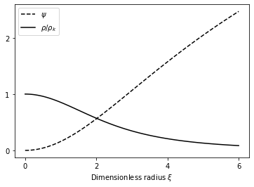
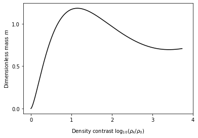

GIS
Numerical integration of the hydrostatic equilibrium equations for an isothermal sphere.
Required dependencies
We load numpy, scipy.integrate.solve_bvp to solve a boundary value problem for our system of ODEs, and matplotlib for plotting the solutions.
import numpy as np
from scipy.integrate import solve_bvp
from matplotlib import pyplot
System of equations
Starting from our equation \frac{1}{\xi^2}\frac{\mathrm{d}}{\mathrm{d}{\xi}}\xi^2 \frac{\mathrm{d}\psi}{\mathrm{d}{\xi}} = e^{-\psi} we apply the chain rule to obtain \frac{2}{\xi}\frac{\mathrm{d}\psi}{\mathrm{d}{\xi}}+ \frac{\mathrm{d}^2\psi}{\mathrm{d}{\xi^2}} = e^{-\psi} \Rightarrow \frac{\mathrm{d}^2\psi}{\mathrm{d}{\xi^2}} = -\frac{2}{\xi}\frac{\mathrm{d}\psi}{\mathrm{d}{\xi}} + e^{-\psi}.
This allows us to express the system of equations in the way the boundary value solver needs, i.e.
y_1' = y_2
y_2' = -\frac{2}{x} y_2 + e^{-y_1}
where y_1 = \psi; y_2 = y_1' = \frac{\mathrm{d}\psi}{\mathrm{d}{\xi}}; y_2' = \frac{\mathrm{d}^2\psi}{\mathrm{d}{\xi^2}}.
Now implementing the differential functions. Here y is an array of the two functions [y_1, y_2] and the function returns the two derivatives, [y_1',y_2'].
def GIS(x, y):
return np.vstack((y[1], -2./x*y[1]+np.exp(-y[0])))
Boundary conditions
Now we also need to implement the boundary condtions. At \xi = x = 0, we have that \frac{\mathrm{d}\psi}{\mathrm{d}{\xi}} = y_2 = y_1' = 0 and also \psi = y_1 = 0. We implement these as a function to minimize (so if the condition was something other than 0 you would return the function - the required value). ya is the LHS boundary condition, and yb is the RHS boundary condition, which in our case isn't supplied.
def bc(ya, yb):
return np.array([ya[0], ya[1]])
Defining the solution grid
We need to specify the x = \xi values we want to solve on. x=0 is problematic because of the factor of 2/x so we just make the first value something very small. We also need a solution vector of corresponding size.
x=np.linspace(0, 6, 10)
x[0]=1e-10
# Solution vector
y = np.zeros((2, x.size))
Run the solver
Call the solve_bvp function to solve the system of ODEs, and check it converged. Status=0 means success.
res = solve_bvp(GIS, bc, x, y)
print(res.status)
0
Plot the solutions
Define new grids for evaluating the solutions and plot.
x_plot = np.linspace(0, 6, 100)
y_plot = res.sol(x_plot)
pyplot.plot(x_plot, y_plot[0,:], 'k--', label=r'$\psi$')
pyplot.plot(x_plot, np.exp(-y_plot[0,:]), 'k', label=r'$\rho/\rho_k$')
pyplot.legend(loc='best')
pyplot.xlabel(r'Dimensionless radius $\xi$')
pyplot.gca().set_xticks([0,2,4,6])
pyplot.gca().set_yticks([0, 1, 2])
pyplot.show()

Calculate and plot mass
Use the solutions to also calculate the dimensionless mass, m=p_0^{1/2} G^{3/2} M_0/ a_T^4 as a function of the density contrast \rho/\rho_k = e^{-\psi}.
# Define initial mesh
x=np.linspace(0, 100, 100)
# Can't handle x=0 because of the infinity so just make it really small
x[0]=1e-10
# Solution vector
y = np.zeros((2, x.size))
# Run the solver
res = solve_bvp(GIS, bc, x, y)
x_plot = np.linspace(0, 100, 500)
y_plot = res.sol(x_plot)
psi=y_plot[0,:]
xi=x_plot
rho_rat=np.exp(-psi)
dpsi_dxi=y_plot[1,:]
m=1./2/np.sqrt(np.pi)*np.sqrt(rho_rat)*xi**2*dpsi_dxi
pyplot.plot(np.log10(1./rho_rat), m, 'k')
pyplot.xlabel(r'Density contrast $\log_{10}(\rho_k/\rho_0)$', labelpad=10)
pyplot.ylabel(r'Dimensionless mass $m$')
pyplot.gca().set_xticks(np.arange(4.1))
pyplot.gca().set_yticks(np.arange(0,1.5,0.5))
[<matplotlib.axis.YTick at 0x7f7781f6dd30>,
<matplotlib.axis.YTick at 0x7f7781f6d710>,
<matplotlib.axis.YTick at 0x7f7781f5ceb8>]

Download this page as a Jupyter notebook or as a standalone Python script.